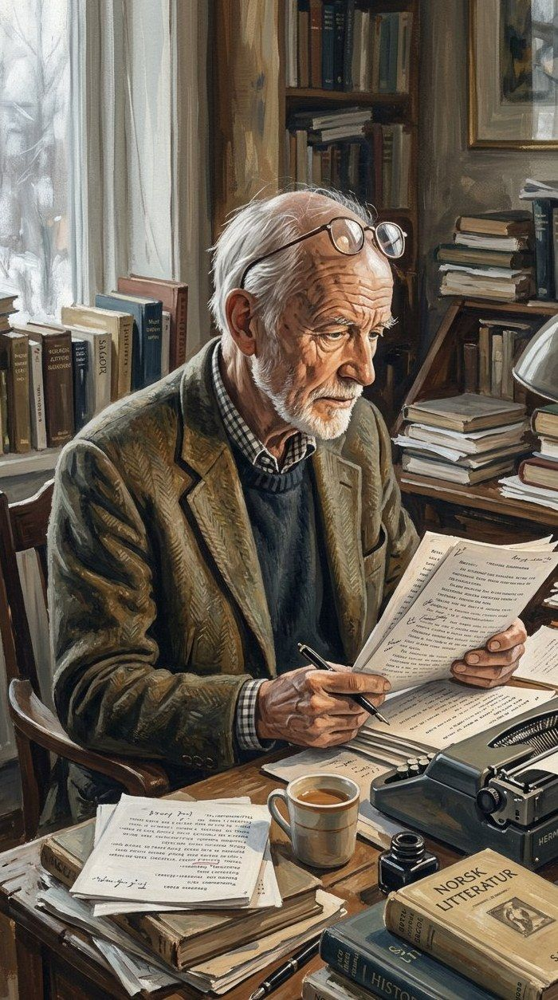
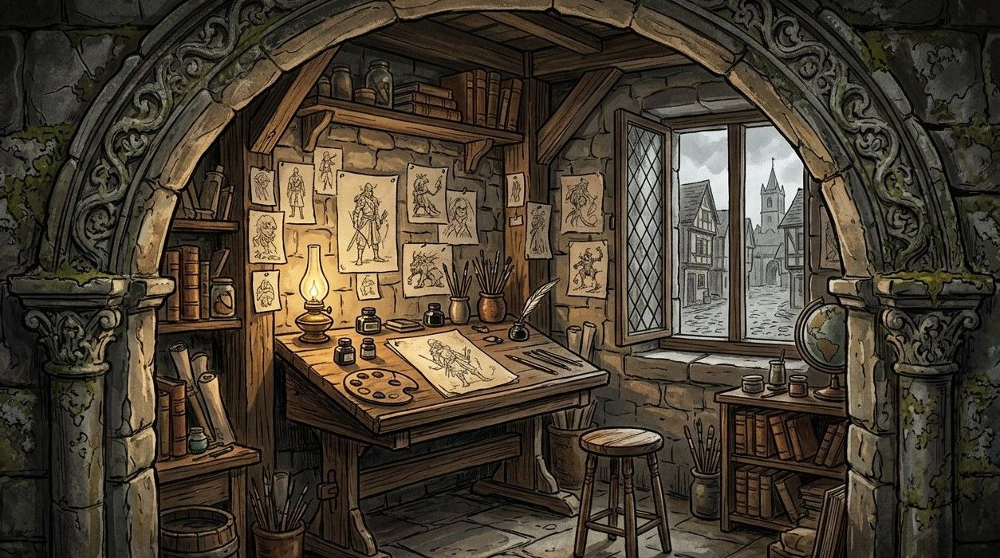
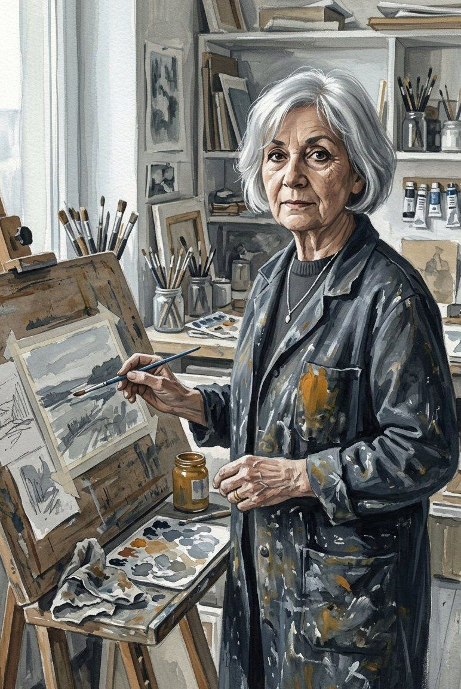
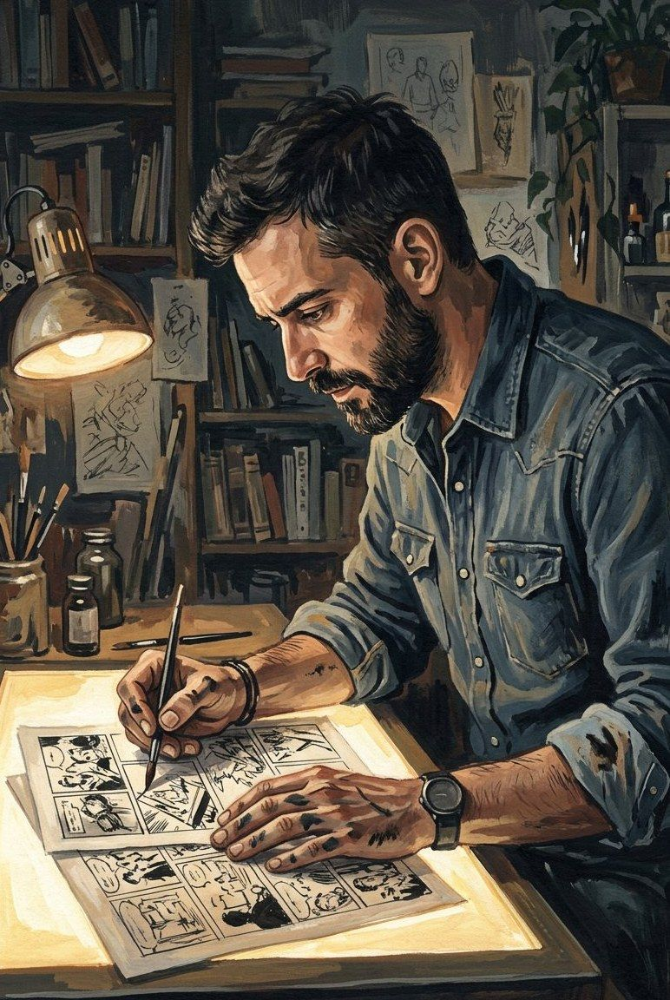

Halvard Ness
Writer · co-creator
Norwegian journalist turned scriptwriter. Pitched a foundling story to a weekly magazine in 1977, was told it would run for six episodes, and wrote the series for thirty-eight years.


Created in 1977 by the writer Halvard Ness and the artist Mira Kowalska for a weekly magazine, the saga has since passed through a dozen pairs of hands without losing its temperature.
Forty-eight years and seventy-four volumes after a scriptwriter promised his editor six episodes, the saga is still running. Other hands have taken up the work since — and the spin-off shelf now reaches back into the characters' earliest days.
What has not changed is the division of labour the founders settled on in 1978: the writer builds the trap, the artist decides how cold it feels.

Writer · co-creator
Norwegian journalist turned scriptwriter. Pitched a foundling story to a weekly magazine in 1977, was told it would run for six episodes, and wrote the series for thirty-eight years.

Artist · co-creator
Trained in Kraków, published across three countries before she was thirty. Her brushwork — dry, scratchy, almost impatient — is the reason the north of this saga feels cold.
Writer
Took over the main series after two volumes of Young Valkarn convinced the publisher she understood the household better than anyone.

Artist
Came to the saga from Sigrun of Stormhold. Keeps Kowalska's grain and adds a wider, colder camera.
Halvard Ness pitches a six-episode story about a foundling. It is accepted on the condition that it ends by Christmas.
Mira Kowalska draws the first volume. It does not end by Christmas.
Volume twenty. The saga stops being an adventure series and becomes a family one.
Young Valkarn opens the prequel shelf and brings a new generation of readers in sideways.
Kowalska hands over the brush to Tomás Ferreira after forty-one years.
Volume forty-three, and a signature for five more.
In their words
“We never wrote a hero. We wrote a man who wants to be left alone in a world that has no vocabulary for it.”
Halvard Ness, 1994
Scripts arrive as forty-six numbered pages with no dialogue in the action lines. Layouts come back as thumbnails the size of a matchbox. Nothing is inked until both of them agree the silent panels are silent enough.
Colour has been part of the storytelling since volume twenty-eight, when Lise Marchand replaced the flat palettes with the bruised greys the series is known for.